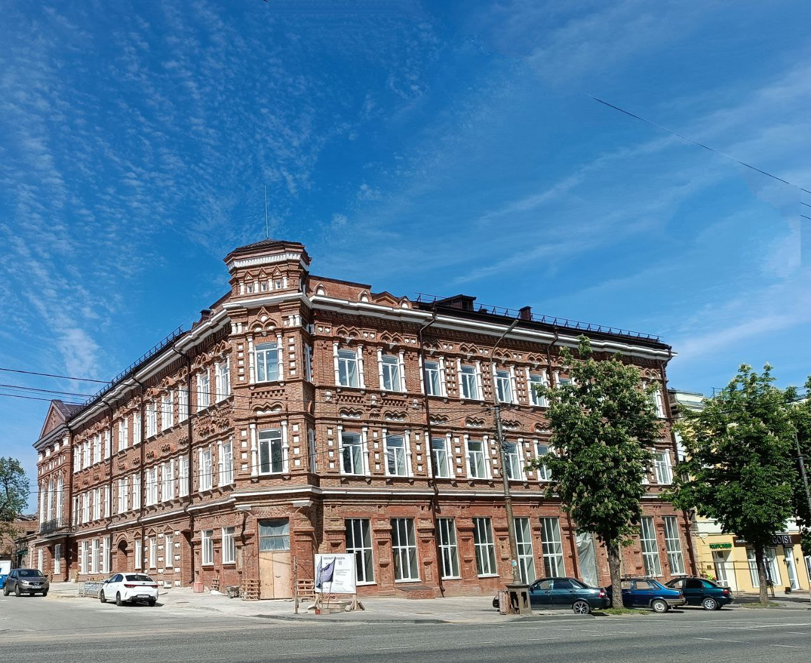

Добрый день, приветствуем в нашем прекрасном, гостеприимном городе!
Мариуполь – город с историческим прошлым и архитектурным обликом. Если пройтись не спеша по старым мариупольским улицам, то обязательно найдутся отблески прошлых веков. Если прислушаться , услышать шум морского прибоя и почувствовать аромат морского воздуха. Мариуполь – город казаков и греков, город, с удивительной историей спорной и не до конца изученной – продолжающей волновать умы краеведов и историков. История Мариуполя противоречива во всем: от даты основания, вплоть до происхождения названия. Сколько тайн хранит наш город!
Давайте вместе попробуем перевернуть страницы истории нашего города.
Слушайте аудио экскурсию о городе и погружайтесь в его атмосферу:


